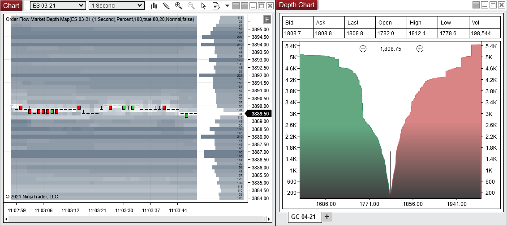
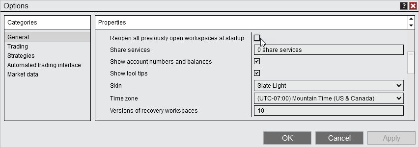
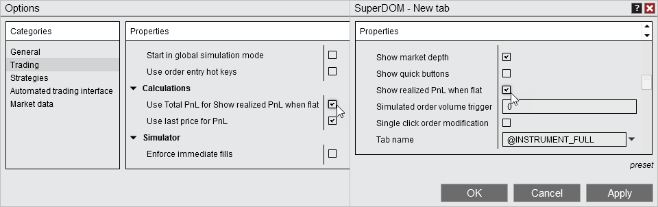

|
<< Click to Display Table of Contents >> 8.0.24.3 |


|
8.0.24.3
|
<< Click to Display Table of Contents >> 8.0.24.3 |
|
8.0.24.3 Release Date
June 15th, 2021
Issue # |
Status |
Category |
Comments |
14908 |
Fixed |
FXCM |
Updated to latest ForexConnect API to support https connect points |
14946 |
Fixed |
Workspaces |
Overwriting existing workspace could be incomplete |
8.0.24.2 Release Date
April 1, 2021
Issue # |
Status |
Category |
Comments |
14836 |
Added |
Rithmic |
Added the ability to connect with futures.de |
14870 |
Fixed |
Strategy Builder |
Could not use Set for Period input on indicators |
8.0.24.1 Release Date
March 12, 2021
Issue # |
Status |
Category |
Comments |
14854 |
Fixed |
Strategy |
Intermittently CloseStrategy() did not close positions |
14861 |
Fixed |
Strategy Builder |
Reopening a strategy and editing it's actions resulted in an error |
8.0.24.0 Release Date
March 10, 2021
Features |
Enhancements to take advantage of additional levels of depth SuperDOM, Depth Chart, Order Flow + Feature #14781

Order Flow Market Depth Map had a setting added called Number of levels to track, which can be configured to track more than the default 10 levels of depth. Depth Chart now is enabled for futures and cryptocurrency instruments. SuperDOM columns performance has been enhanced to handle more levels of depth. Multiple data providers offer more than 10 levels of depth. NinjaTrader Continuum & CQG have begun adding more levels of depth on popular instruments. |
Multiple workspaces will open at startup only when opted in to do so Workspaces Feature #14761

One of the main causes of increased resources being used is multiple workspaces running at the same time and most people don't even realize that is occurring. To help boost performance, NinjaTrader now will only open multiple workspaces at start up for users who opt into doing so. No action is needed to only open 1 workspace at start up. To opt in for multiple workspaces, go to the Control Center> General and enable Reopen all previously open workspaces at startup. |
Commissions template values can now be applied to Realized PnL Commissions Feature #14726

Viewing realized PnL when flat from your order entry windows can now be shown in Gross realized PnL or Total PnL. Within order entry windows, the property previously named Show gross realized PnL when flat has been renamed to Show realized PnL when flat. By default it will continue to show Gross realized PnL. To show Total PnL, within the Control Center go to Tools> Trading and enable Use total PnL for Show realized PnL when flat. |
Issue # |
Status |
Category |
Comments |
14785 |
Fixed |
Alerts |
Alerts Log filter was not filtering |
14765 |
Fixed |
ATM Strategies |
Close operation failed with MIT targets |
14777 |
Fixed |
ATM Strategies |
ATM stop strategy template could disappear and ATM reverted to Custom after an hour of inactivity |
14675 |
Fixed |
Chart |
Global Cross-hair did not update with small movements |
14688 |
Fixed |
Chart |
Duplicating Chart Window then quickly closing via task bar resulted in an error |
14697 |
Fixed |
Chart |
Renko bars failed to draw on Volumetric charts |
14705 |
Changed |
Chart |
Charts could not be panned when Center price on scale was used, now it will disable so that it can be panned |
14706 |
Fixed |
Chart |
Opening a new chart with a template applied prevented the chart from showing it was loading |
14762 |
Fixed |
Chart |
Indicator Displacement caused chart to scale incorrectly |
14662 |
Fixed |
Chart Trader |
Pressing escape did not cancel an order move operation |
14692 |
Fixed |
Chart Trader |
Using Display selected ATM strategy only did not show all orders when ATM selection was set to None |
14693 |
Fixed |
Chart Trader |
Positions markers did not display in fractions for instruments quoted in fractions |
14751 |
Fixed |
Chart, DrawingTools |
Placing a draw object then changing instrument then changing instrument back to original did not show that draw object. |
14747 |
Fixed |
Chart, DrawingTools |
Drawing objects placed on a holiday in the future could display on the wrong bar |
14749 |
Fixed |
Chart, NinjaScript |
RemoveDrawObjects did not remove global draw objects if chart using indicator was on background tab |
14811 |
Fixed |
Connections |
Migrating NinjaTrader 7 connections could result in duplicate Kinetick EOD connections |
14770 |
Fixed |
Control Center |
Connection status stayed green in Accounts tab when disconnected |
14774 |
Fixed |
Control Center |
Restoring English Workspace in German resulted in an error |
14739 |
Fixed |
Database |
Some instruments had incorrect information after resetting instruments |
14769 |
Fixed |
Database |
Realized PnL could show previous value if new value was not received |
14789 |
Fixed |
FXCM |
Realized PnL in accounts tab could report incorrectly |
14808 |
Fixed |
Indicator |
Woodies Pivots line widths settings did not work |
14795 |
Fixed |
Instruments |
Futures instruments could be created without any contract months defined |
14736 |
Fixed |
Interactive Brokers |
Disconnects from overnight prevented real-time data from coming in |
14763 |
Fixed |
Interactive Brokers |
Incorrect settings in Traders Workstation could cause space-bar to be entered repeatedly |
14779 |
Fixed |
Interactive Brokers |
Resolved some instruments that showed with the wrong contract month |
14750 |
Fixed |
IQFeed, Data |
Volume for indexes did not update in real-time |
14752 |
Fixed |
Kinetick |
Instruments on NASDAQCM caused a disconnect/reconnect loop |
14754 |
Fixed |
Kinetick, Chart |
Bid/ask/last tick data on the same panel could plot incorrectly |
14696 |
Fixed |
Kinetick, Chart |
Reloading data could result in missing bid/ask tick data |
14440 |
Fixed |
Licensing |
Timezone affected free trial start/end date for 3rd party add-ons |
14689 |
Fixed |
Localization |
Resolved an error that occurred when adjusting some settings after setting the language to Spanish |
14690 |
Fixed |
Localization, Alerts |
Alerts with @Nombre in the Text field would not save when language was set to Spanish |
14687 |
Fixed |
NinjaScript, DrawingTool |
Draw.TextFixed opacity could no longer change if set to 90% or greater |
14707 |
Fixed |
NinjaScript, Rithmic |
Account.PositionUpdate did not show flat positions for Rithmic |
14606 |
Changed |
Options |
Simulation accounts now always calculate as FIFO and the FIFO setting was removed since it only affected simulation accounts |
14621 |
Fixed |
Order Flow + |
Order Flow Volume Profile week/month started on wrong day for some timezones |
14701 |
Fixed |
Order Flow + |
Order Flow Volume Profile using a week profile period did not display correctly with additional data series |
14766 |
Fixed |
Order Flow + |
Order Flow Market Depth property, Number of levels to track, did not persist with workspace change |
14745 |
Fixed |
Order Flow +, Indicators |
Various indicators with weekly or monthly reset now match logic for weekly/monthly bars |
14744 |
Fixed |
Playback, Strategy |
Rewinding Playback caused strategy indicators to be removed |
14778 |
Fixed |
Playback, Strategy |
Adding a 1 tick series to a strategy would only pull 5 days of data for the historical tick series when applied in Playback |
14814 |
Fixed |
Regionalization |
Italian language resources updated |
14682 |
Fixed |
Strategy, Chart |
Repeatedly enabling then disabling strategy could cause chart to lockup |
14188 |
Fixed |
Strategy |
Disconnected accounts were listed in the Account drop-down of the Strategy window |
14708 |
Fixed |
Strategy |
Resolved a scenario where a strategy could show multiple times on the Strategies tab |
14710 |
Fixed |
Strategy |
Resolved a case where an error in OnExecutionUpdate was not handled properly |
14742 |
Fixed |
Strategy |
Connection loss could result in a disabled strategy showing as enabled |
14771 |
Fixed |
Strategy |
Resolved a scenario where a rejected modified order did not stop the strategy since the order was rolled back |
14799 |
Fixed |
Strategy |
ExitOnSessionClose did not execute on last session of chart if market was open |
14801 |
Fixed |
Strategy Analyzer |
Attempting to view Walk Forward Optimization results in a new instance of the Strategy Analyzer caused an error on next run |
14632 |
Fixed |
Strategy Builder |
Indicators without plots incorrectly showed as available |
14746 |
Done |
Strategy Builder |
User inputs could prevent entering value in some situations |
14773 |
Fixed |
Strategy Builder |
Numeric value was missing for order submission quantity |
14775 |
Fixed |
Strategy Builder |
Offset field could become disabled |
14796 |
Fixed |
Strategy Builder |
Resolved some scenarios of user inputs not being able to be entered/modified as expected |
14792 |
Fixed |
Strategy, Chart |
Strategy using AddChartIndicator left indicators on chart when calling CloseStrategy |
14802 |
Fixed |
Strategy, Trade Performance |
Strategy Performance window did not close when strategy was disabled in chart |
14643 |
Fixed |
TD Ameritrade |
Resolved a scenario where an error resulted in real-time data not coming in |
14664 |
Fixed |
TD Ameritrade |
Buying power was not displaying |
14673 |
Fixed |
Workspaces |
Workspace changes were not saved when exiting if a workspace was restored and then it's name was too long |
14696 |
Fixed |
Chart, Workspaces |
Workspace couldn't load some instruments on charts if database was deleted |